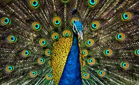

camels are also called "ship of the desert"
camels are able to survive the hearsh weather conditions of the desert by storing food in their humps
These are some fun facts about camels:
CAMELS


rabbits are mammals and inspite of their adorable furry faces they can be vicious when agitated
Rabbits love leafy vegetables and carrots are thier favourite
rabbits are also skilled jumpers and used their speed and agility to escape from predators
RABBITS

Peacocks are beautiful creatures with gorgeous feathers that they use while mating
Peacocks are not really blue they have structures in their feathers that refract light and make it appear blue